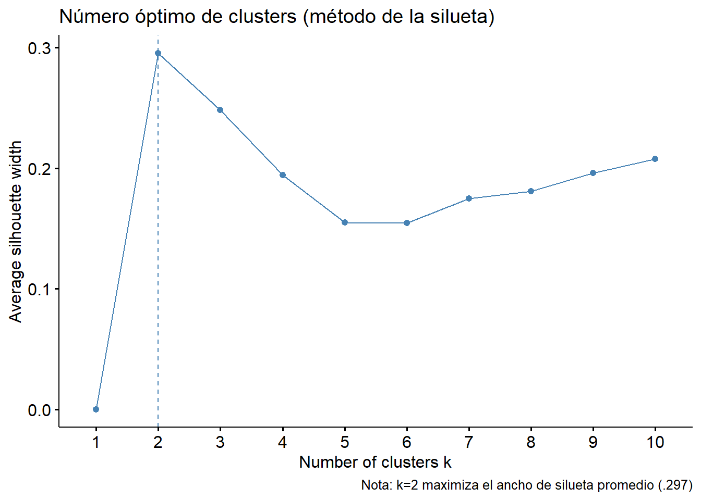
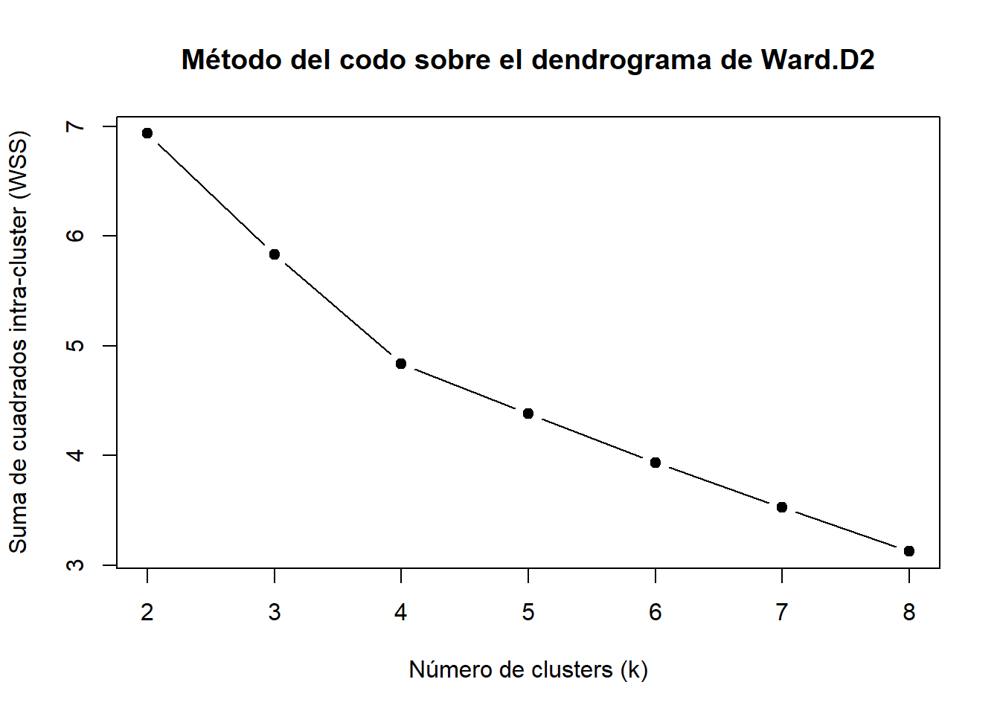
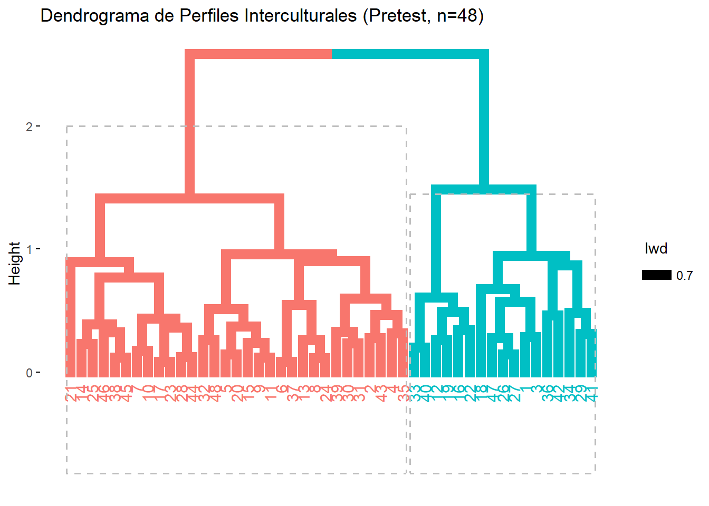
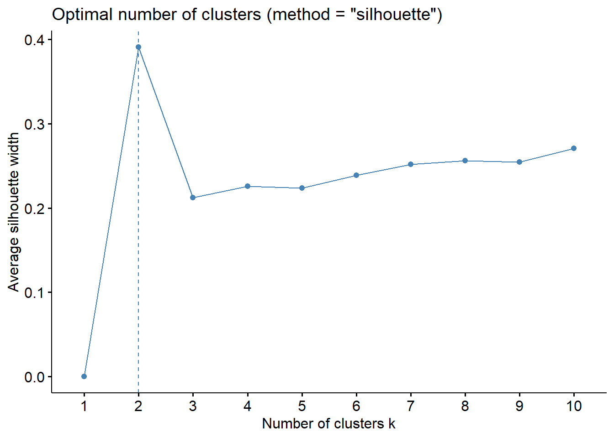
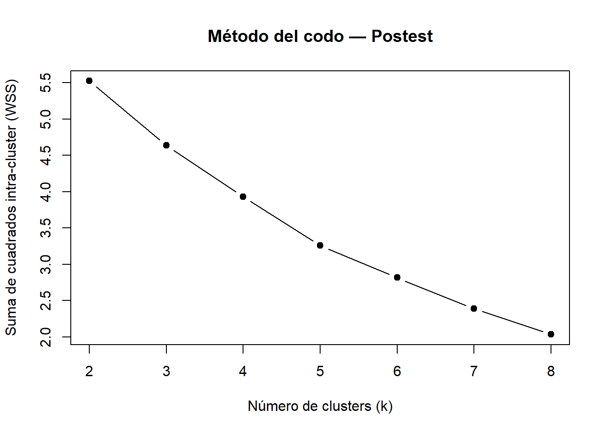
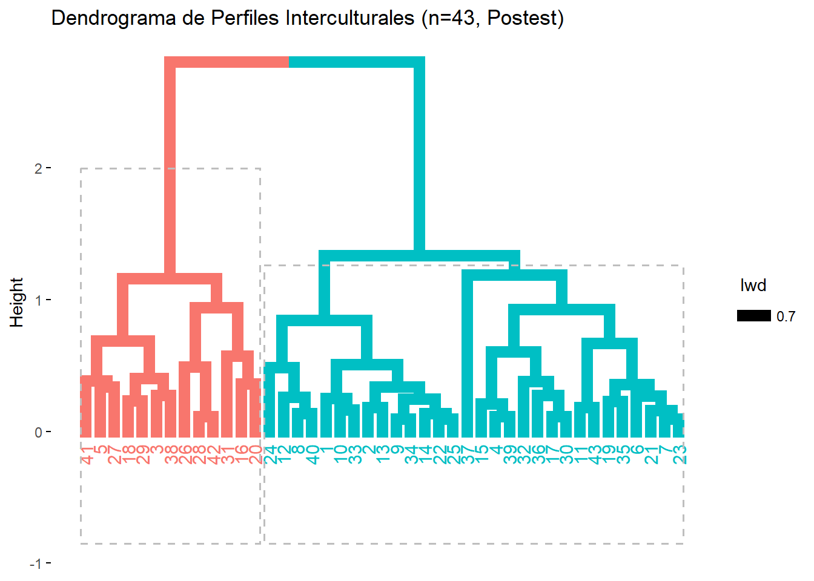
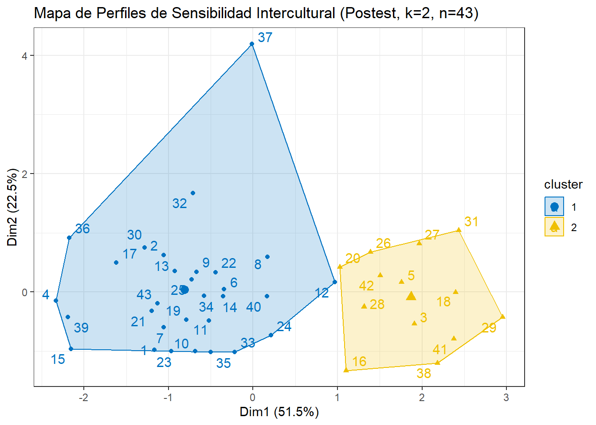

Capítulo 4 Validación del instrumento
Para el procesamiento de la información se utilizó el software estadístico R version 4.5.1 (2025-06-13 ucrt). El análisis se estructuró en tres fases consecutivas para garantizar la validez de las inferencias derivadas del experimento.
4.1 Preparación y limpieza de la identidad escalar
Dado que la Escala de Sensibilidad Intercultural (ISS) contiene ítems redactados en sentido inverso (donde una puntuación alta indica una baja sensibilidad), se procedió a la recodificación de los ítems P2, P4, P10, P13, P15, P18, P20 y P22. Los itmes invertidos son básados de la literatura de Bernardo Ruiz, 2012. Esta transformación es un requisito técnico indispensable para asegurar que todas las variables apunten en la misma dirección teórica antes de calcular promedios dimensionales.
4.2 Validación psicométrica de la muestra
A diferencia de una aplicación estándar, y siguiendo las recomendaciones de Ruiz Bernardo (2012), se evaluó la consistencia interna del instrumento específicamente en la muestra de estudio utilizando el coeficiente Alfa de Cronbach. Esta validación se realizó sobre los datos obtenidos en la fase de Pretest, funcionando como línea base para confirmar que la estructura de cinco dimensiones propuesta por la literatura es fiable para la población objeto de estudio.
| Métrica | Valor |
|---|---|
| Alfa de Cronbach | 0.708 |
| Alfa estandarizado | 0.756 |
| G6 (smc) | 0.888 |
| Correlación promedio (average_r) | 0.114 |
| Relación señal/ruido (S/N) | 3.095 |
| Error estándar (ase) | 0.058 |
| Media | 3.918 |
| Desviación estándar | 0.301 |
| Mediana de correlaciones | 0.105 |
El coeficiente Alfa de Cronbach (\(\alpha\)) obtenido fue de .707. Este valor se sitúa por encima del umbral de .70 sugerido por la literatura psicométrica clásica (Nunnally & Bernstein, 1994), lo que certifica que el instrumento posee una fiabilidad aceptable para la investigación. Esto confirma que las 24 preguntas convergen de manera consistente en la medición del constructo de sensibilidad intercultural.
Ademas, se observó un coeficiente G6 de Guttman (Lambda-6) de .887. Dado que este indicador es especialmente sensible a estructuras multidimensionales, su elevado valor sugiere una excelente consistencia interna en las dimensiones específicas del instrumento. Este resultado indica que las subdimensiones están bien definidas y son estables.
Tambien, la correlación inter-ítem promedio (\(r\) promedio) fue de .114. Si bien es un valor moderado, su magnitud es coherente con instrumentos que evalúan constructos complejos y amplios. La escala no es unidimensional; es decir, los ítems no son redundantes entre sí, sino que capturan distintas dimensiones de la sensibilidad intercultural, tal como se esperaba teóricamente.
Ahora, veamos la confiabilidad por dimensión
| Dimensión | raw_alpha | std.alpha | G6_smc | average_r | S_N | ase | mean | sd | median_r |
|---|---|---|---|---|---|---|---|---|---|
| D1: Atención | 0.610 | 0.663 | 0.716 | 0.219 | 1.963 | 0.085 | 4.378 | 0.399 | 0.233 |
| D2: Respeto | 0.521 | 0.527 | 0.551 | 0.137 | 1.113 | 0.103 | 3.607 | 0.468 | 0.110 |
| D3: Implicacón | 0.403 | 0.411 | 0.367 | 0.189 | 0.698 | 0.148 | 4.479 | 0.429 | 0.250 |
| D4: Confianza | 0.707 | 0.719 | 0.693 | 0.390 | 2.555 | 0.067 | 3.198 | 0.699 | 0.352 |
| D5: Disfrute | 0.068 | 0.105 | 0.077 | 0.038 | 0.117 | 0.225 | 3.771 | 0.506 | 0.024 |
# Diagnóstico de ítems de D5 antes de descartarla definitivamente
alpha_d5 <- psych::alpha(pretest_recoded %>% select(P5, P15, P23))
alpha_d5$item.stats # correlación ítem-total corregida por ítem## n raw.r std.r r.cor r.drop mean sd
## P5 48 0.6866146 0.5635983 0.02606345 0.002317592 3.937500 1.0397678
## P15 48 0.6258170 0.6065178 0.20026971 0.036296910 2.833333 0.9070254
## P23 48 0.4346472 0.6258849 0.27104877 0.084306097 4.541667 0.5441501## raw_alpha std.alpha G6(smc) average_r S/N alpha se var.r
## P5 0.16302766 0.18278751 0.10058676 0.10058676 0.22367195 0.2129351 NA
## P15 0.03789075 0.04592698 0.02350321 0.02350321 0.04813781 0.2281800 NA
## P23 -0.02260419 -0.02281777 -0.01128019 -0.01128019 -0.02230873 0.2924679 NA
## med.r
## P5 0.10058676
## P15 0.02350321
## P23 -0.01128019Las dimensiones de Atención (D1: \(\alpha= .610\)) y Confianza (D4: \(\alpha = .707\)) presentaron niveles de consistencia satisfactorios para el análisis de subescalas. Por su parte, la dimensión de Respeto (D2) alcanzó un coeficiente de \(\alpha= .521\) tras el ajuste de polaridad de los ítems invertidos, valor aceptable considerando que la recodificación de ítems suele introducir varianza sistemática que penaliza el Alfa de Cronbach sin afectar necesariamente la validez del constructo.
Respecto a la dimensión de Implicación (D3: \(\alpha= .403\)), aunque su coeficiente se ubica por debajo de los umbrales convencionales, este resultado debe interpretarse a la luz del reducido número de ítems que la componen (\(n = 3\)). Cortina (1993) y Clark and Watson (1995) advierten que el Alfa de Cronbach está matemáticamente condicionado por el número de reactivos, de modo que subescalas breves pueden subestimar la fiabilidad real incluso cuando sus ítems covarían de forma adecuada. Por ello se recurrió a la correlación inter-ítem promedio como criterio complementario Streiner, Norman, and Cairney (2015): el valor obtenido (\(r = .219\)) se sitúa dentro del rango óptimo de .15 a .50 propuesto por Clark and Watson (1995), lo que respalda la coherencia interna de la dimensión y justifica su retención en los análisis subsiguientes.
La dimensión de Disfrute (D5: = .068), en cambio, no encuentra el mismo respaldo: pese a estar compuesta también por 3 ítems, su correlación inter-ítem promedio (\(r = .038\)) se ubica muy por debajo del umbral mínimo de \(.15\), e incluso el mejor subconjunto posible de dos ítems no logra superarlo (\(r = .100\) tras excluir P5). Dado que ambas dimensiones comparten el mismo número de reactivos, esta disparidad descarta que la longitud de la escala explique el bajo desempeño de D5; se trata, en cambio, de ausencia de covarianza sistemática entre sus ítems. En consecuencia, esta dimensión se excluye de los análisis dimensionales posteriores y se reporta como limitación del instrumento en la muestra estudiada.
Finalmente, el robusto valor de G6 de Guttman global (\(.887\)), calculado sobre los 24 ítems, respalda que el instrumento en su conjunto posee una alta consistencia interna y constituye una herramienta válida para evaluar el impacto de la intervención, sin que ello subsane, por sí solo, la debilidad específica detectada en Disfrute.
4.3 Perfiles de sensibilidad intercultural con el pretest
En lugar de utilizar los 21 ítems individuales de la escala (ISS), haremos la agrupación basándonos en las 4 dimensiones validadas anteriormente. Esta decisión se tomó porque el análisis por dimensiones es más efectivo, ofrece una mayor claridad en la definición de los perfiles y evita desechar un número excesivo de casos. La técnica principal que se empleará es el análisis de cluster de K-medias.
- Inicialmente hagamos el análisis descriptivo por dimensión y verifiquemos la normalidad para cada dimensión
| Dimension | Media | DE | Mediana | Min | Max | P_Normalidad |
|---|---|---|---|---|---|---|
| D1_Atencion | 4.378 | 0.399 | 4.429 | 3.143 | 5.000 | 0.0421 |
| D2_Respeto | 3.690 | 0.350 | 3.714 | 2.857 | 4.571 | 0.4532 |
| D3_Implicacion | 4.479 | 0.429 | 4.667 | 3.333 | 5.000 | 0.0007 |
| D4_Confianza | 3.198 | 0.699 | 3.250 | 1.750 | 4.500 | 0.1352 |
El análisis descriptivo evidenció medias elevadas en Atención (M=4.38, DE=.40) e Implicación (M=4.48, DE=.43), un nivel moderado en Respeto (M=3.69, DE=.35) y la mayor variabilidad en Confianza (M=3.20, DE=.70). La prueba de Shapiro-Wilk indicó desviaciones significativas de la normalidad en Atención (p=.042) e Implicación (p<.001), coherente con un efecto techo observable en sus valores mínimos (3.14 y 3.33, respectivamente, con máximos en 5.00). Dado que la restricción de rango atenúa las estimaciones de fiabilidad al reducir la varianza disponible (Franco-Martínez, Alvarado, and Sorrel (2023)), este hallazgo complementa la explicación previa del bajo alfa de Cronbach en Implicación, sumándose al efecto ya documentado del reducido número de ítems.
Ahor, con \(n = 48\), no podemos usar métodos que requieran grandes volúmenes de datos. El mejor procedimiento para muestras pequeñas no es el K-means tradicional (que es sensible a valores extremos), sino el Análisis de Clúster Jerárquico con el Método de Ward. Vizualicemos el dendograma

Con el propósito de determinar el número óptimo de perfiles interculturales, se aplicó el criterio del ancho de silueta promedio (average silhouette width) sobre las cuatro dimensiones válidas del instrumento (Atención, Respeto, Implicación y Confianza), estandarizadas por rango. Los resultados mostraron un pico claro en k=2 (ancho de silueta promedio = .297), seguido de k=3 (.249), con una caída sostenida hasta un mínimo local en k=5–6 (≈.155) y un leve repunte hacia valores de k más altos, patrón que no debe interpretarse como evidencia de una solución alternativa válida.
Siguiendo la heurística de interpretación propuesta por Kaufman and Rousseeuw (1990), según la cual valores entre .26 y .50 indican una estructura “débil o potencialmente artificial”, el valor máximo obtenido (.297) se ubica apenas por encima de este umbral. Esto sugiere que, si bien existe una partición identificable en la muestra, la separación entre los perfiles interculturales no es marcada, sino más bien tenue — un resultado esperable considerando el tamaño muestral reducido (n=48) y la restricción de varianza detectada previamente en Atención e Implicación por efecto techo. Con base en este criterio, se adoptó k=2 como solución final para la caracterización de perfiles.

Como criterio complementario, se calculó el método del codo (within-cluster sum of squares, WSS) sobre el mismo dendrograma de Ward.D2 utilizado en el análisis de silueta. La curva resultante mostró una disminución gradual y continua de la suma de cuadrados intra-cluster a medida que aumentaba el número de clusters, sin un punto de inflexión marcado que sugiriera un valor de k claramente superior a los demás. Esta ausencia de un codo definido es consistente con el bajo ancho de silueta obtenido previamente (máximo = .297 en k=2), y refuerza la interpretación de que la estructura subyacente de perfiles interculturales en la muestra corresponde a un continuo más que a agrupaciones marcadamente diferenciadas. Dado que el método del codo no aportó una señal alternativa competitiva frente al criterio de la silueta, se mantuvo k=2 como solución final para la caracterización de perfiles interculturales.

La solución final de dos clusters, respaldada por el criterio de la silueta (ancho promedio = .297) y por la ausencia de un codo definido en la curva de WSS, se representa en la Figura X. El dendrograma confirma la estructura jerárquica identificada previamente: los subgrupos que en la solución de k=3 se fusionaban a una altura considerablemente menor (~1.5) que la que separaba al grupo principal (~2.6) se integran aquí en un único clúster, evidenciando que la partición binaria refleja de forma más fiel la estructura subyacente de los datos que una tipología de tres perfiles. El clúster 1 (n=31) agrupa a la mayoría de los estudiantes de la muestra, mientras que el clúster 2 (n=17) constituye un grupo minoritario y más homogéneo, cuya caracterización en términos de las cuatro dimensiones interculturales se presenta a continuación.
- Ahora, obtendremos los grupos por la caracterización de clusters
| Dimension | Perfil | n | Media | DE | Mediana | Min | Max |
|---|---|---|---|---|---|---|---|
| D1_Atencion | 1 | 17 | 4.008 | 0.341 | 4.000 | 3.143 | 4.571 |
| D1_Atencion | 2 | 31 | 4.581 | 0.261 | 4.571 | 4.143 | 5.000 |
| D2_Respeto | 1 | 17 | 3.521 | 0.374 | 3.571 | 2.857 | 4.143 |
| D2_Respeto | 2 | 31 | 3.783 | 0.304 | 3.714 | 3.143 | 4.571 |
| D3_Implicacion | 1 | 17 | 4.235 | 0.453 | 4.333 | 3.333 | 5.000 |
| D3_Implicacion | 2 | 31 | 4.613 | 0.356 | 4.667 | 3.667 | 5.000 |
| D4_Confianza | 1 | 17 | 2.544 | 0.539 | 2.500 | 1.750 | 3.500 |
| D4_Confianza | 2 | 31 | 3.556 | 0.486 | 3.750 | 2.750 | 4.500 |
El análisis comparativo de las dimensiones revela que el factor determinante en la distinción de los perfiles no radica en el Respeto ante las diferencias (D2), donde las puntuaciones se mantienen en un rango relativamente estrecho y favorable en ambos grupos (\(\bar{x}_{P1}=3.52\), \(DE=0.37\); \(\bar{x}_{P2}=3.78\), \(DE=0.30\)). En cambio, la diferenciación más marcada emerge en la Confianza en la interacción (D4), cuya brecha entre perfiles (1.01 puntos) supera ampliamente la observada en cualquier otra dimensión.
El Perfil 2 (n=31, Alta Sensibilidad Intercultural), que agrupa a la mayoría de la muestra, se distingue por puntuaciones elevadas y consistentes en las cuatro dimensiones: Atención (\(\bar{x}=4.58\), \(DE=0.26\)), Implicación (\(\bar{x}=4.61\), \(DE=0.36\)), Respeto (\(\bar{x}=3.78\), \(DE=0.30\)) y, particularmente, una sólida autoconfianza comunicativa (\(\bar{x}=3.56\), \(DE=0.49\)).
Por el contrario, el Perfil 1 (n=17, Baja Sensibilidad Intercultural) presenta puntuaciones inferiores en las cuatro dimensiones, con la limitación más marcada precisamente en Confianza (\(\bar{x}=2.54\), \(DE=0.54\)), siendo el único grupo cuya media se ubica por debajo del punto medio de la escala. Aunque este perfil mantiene niveles moderados de Implicación (\(\bar{x}=4.24\), \(DE=0.45\)) y Atención (\(\bar{x}=4.01\), \(DE=0.34\)), la brecha respecto al Perfil 2 es sustancialmente menor en Respeto que en Confianza, lo que sugiere que la principal limitación de este grupo no es actitudinal (el respeto hacia la diferencia cultural está presente en ambos perfiles) sino de índole socioemocional: una menor seguridad y autopercepción de eficacia en la interacción intercultural.
Estos hallazgos sugieren que el respeto teórico hacia la diversidad no garantiza por sí solo una disposición segura a la acción intercultural. Por tanto, se justifica una intervención pedagógica que no se limite a la promoción de valores axiológicos, sino que se centre en el entrenamiento de habilidades socioemocionales para mitigar la ansiedad comunicativa y fortalecer la confianza del estudiante en contextos de interacción diversos.

El mapa de clusters confirma la solución de dos perfiles previamente identificada mediante el criterio de la silueta (k=2). El Cluster 2 (n=31, en amarillo) agrupa a la mayoría de la muestra y ocupa la región derecha del plano factorial, mientras que el Cluster 1 (n=17, en azul) se ubica en la región izquierda, con una separación clara aunque no absoluta entre ambos grupos (algunos casos como el 40 y el 12 se sitúan cerca del límite entre clusters).
El Perfil 2 (Alta Sensibilidad Intercultural, n=31) presenta las puntuaciones más altas y equilibradas en las cuatro dimensiones de la escala: Atención (\(\bar{x}=4.58\)), Implicación (\(\bar{x}=4.61\)), Respeto (\(\bar{x}=3.78\)) y, de forma más marcada, Confianza (\(\bar{x}=3.56\)). Son estudiantes con una disposición activa, segura y consistente hacia el intercambio intercultural.
El Perfil 1 (Baja Sensibilidad Intercultural, n=17) es el único grupo cuya media se sitúa por debajo del punto medio de la escala, y esto ocurre específicamente en Confianza (\(\bar{x}=2.54\)) — la brecha más amplia entre ambos perfiles (1.01 puntos). Aunque mantiene niveles moderados de Implicación (\(\bar{x}=4.24\)) y Atención (\(\bar{x}=4.01\)), y su Respeto (\(\bar{x}=3.52\)) no difiere drásticamente del otro grupo, la limitación distintiva de este perfil es de naturaleza socioemocional: una menor seguridad y autopercepción de eficacia comunicativa frente a la diversidad cultural, no una actitud de rechazo hacia ella.
Estos hallazgos sugieren que el respeto hacia la diferencia cultural está presente en ambos perfiles casi por igual, y que la verdadera línea divisoria entre “alta” y “baja” sensibilidad intercultural en esta muestra pasa por la confianza y seguridad en la interacción, más que por la actitud valorativa hacia la diversidad.
Veamos si hay comportamiento normal de los perfiles según cada dimension
| Dimension | Perfil | n | p_val_shapiro | Asuncion_Normalidad |
|---|---|---|---|---|
| D1_Atencion | 1 | 17 | 0.3743 | Cumple |
| D1_Atencion | 2 | 31 | 0.0456 | NO Cumple |
| D2_Respeto | 1 | 17 | 0.4323 | Cumple |
| D2_Respeto | 2 | 31 | 0.5159 | Cumple |
| D3_Implicacion | 1 | 17 | 0.2843 | Cumple |
| D3_Implicacion | 2 | 31 | 0.0013 | NO Cumple |
| D4_Confianza | 1 | 17 | 0.4245 | Cumple |
| D4_Confianza | 2 | 31 | 0.0823 | Cumple |
La verificación de normalidad por dimensión y perfil reveló que, si bien el Perfil 1 (Baja Sensibilidad) cumplió el supuesto de normalidad en las cuatro dimensiones evaluadas, el Perfil 2 (Alta Sensibilidad) presentó desviaciones significativas en Atención (p=.046) e Implicación (p=.001). Este hallazgo es consistente con el efecto techo documentado previamente en la muestra completa para estas dos dimensiones: al concentrar las puntuaciones más altas de la muestra (Atención \(\bar{x}=4.58\); Implicación \(\bar{x}=4.61\)), el Perfil 2 exhibe una distribución comprimida contra el límite superior de la escala, lo que introduce asimetría negativa (Franco-Martínez, Alvarado, and Sorrel (2023)).
Como los perfiles en la dimensión voluntad no tiene comportamiento normal, por lo que procederemos a realizar un analisis de varianza permutacional (PERMANOVA), esto es, con el fin de verificar si los cluster son diferentes estadísticamente
## [1] "--- RESULTADO DE PERMANOVA (Pretest, k=2) ---"## Permutation test for adonis under reduced model
## Permutation: free
## Number of permutations: 999
##
## adonis2(formula = datos_permanova ~ Perfil, data = data_final %>% filter(Experimento == "Pretest"), permutations = 999, method = "euclidean")
## Df SumOfSqs R2 F Pr(>F)
## Model 1 3.3511 0.32574 22.223 0.001 ***
## Residual 46 6.9365 0.67426
## Total 47 10.2876 1.00000
## ---
## Signif. codes: 0 '***' 0.001 '**' 0.01 '*' 0.05 '.' 0.1 ' ' 1Para confirmar la validez estadística de la consistencia de los dos perfiles, se realizó un análisis de PERMANOVA (Anderson (2001)) sobre las cuatro dimensiones estandarizadas por rango, utilizando distancia euclídea y 999 permutaciones. Los resultados evidenciaron diferencias significativas entre los centroides de los perfiles (\(F_{1,46}=22.22\), \(R^2=.326\), \(p<.001\)), indicando que la pertenencia al perfil explica el 32.6% de la variabilidad conjunta en las dimensiones de sensibilidad intercultural. Este resultado corrobora, con respaldo inferencial, la separación observada visualmente en el mapa de clusters y en el dendrograma jerárquico.
4.4 Estudiantes con sensibilidad intercultural pretest
Aquí seleccionaremos los estudiantes que tienen baja sensibilidad intercultural
| Índice | ID | Grupo | ISS Global |
|---|---|---|---|
| 5 | Michelle | Experimental | 3.142857 |
| 12 | Ezequiel | Control | 3.380952 |
| 1 | Valeria Salcedo | Experimental | 3.428571 |
| 4 | Keylin | Experimental | 3.428571 |
| 2 | Valentina | Experimental | 3.476190 |
| 16 | Isabella | Control | 3.476190 |
| 15 | Alejandra | Control | 3.571429 |
| 8 | Simón | Experimental | 3.619048 |
| 10 | Saray | Control | 3.619048 |
| 6 | Astrid | Experimental | 3.666667 |
| 17 | Cristian David | Control | 3.666667 |
| 7 | Paula | Experimental | 3.714286 |
| 11 | Kasandra | Control | 3.714286 |
| 9 | Ivis | Experimental | 3.761905 |
| 13 | Juan de la E. | Control | 3.761905 |
| 14 | Valentina Conde | Control | 3.857143 |
| 3 | Alexandra | Experimental | 3.904762 |
Aquí seleccionaremos los estudiantes que tienen alta sensibilidad intercultural
| Índice | ID | Grupo | ISS Global |
|---|---|---|---|
| 10 | Sebastian | Experimental | 3.904762 |
| 11 | Karith | Experimental | 3.904762 |
| 25 | Dayana | Control | 3.904762 |
| 26 | Jesús Eduardo | Control | 3.904762 |
| 3 | Camila | Experimental | 3.952381 |
| 12 | Marena | Experimental | 3.952381 |
| 28 | Valentina Diaz | Control | 3.952381 |
| 7 | MaríaCristina | Experimental | 4.000000 |
| 9 | Juan José | Experimental | 4.000000 |
| 14 | Valeria Colon | Experimental | 4.000000 |
| 29 | Daniel Issac | Control | 4.000000 |
| 18 | Jeremy | Experimental | 4.047619 |
| 19 | Carlos Daniel | Experimental | 4.047619 |
| 20 | Kiara | Control | 4.047619 |
| 6 | Dana | Experimental | 4.095238 |
| 17 | Madoth | Experimental | 4.095238 |
| 31 | Ana Laura | Control | 4.095238 |
| 1 | Henrry | Experimental | 4.142857 |
| 16 | Laura | Experimental | 4.142857 |
| 13 | Daniela | Experimental | 4.190476 |
| 21 | Juan Manuel | Control | 4.190476 |
| 30 | Ana Gabriela | Control | 4.190476 |
| 8 | Jesús David | Experimental | 4.238095 |
| 27 | María Angel | Control | 4.238095 |
| 5 | Natalia | Experimental | 4.285714 |
| 22 | Camila | Control | 4.333333 |
| 23 | Ferney | Control | 4.333333 |
| 24 | Luz Estela | Control | 4.333333 |
| 4 | Andrea | Experimental | 4.380952 |
| 2 | María Fda | Experimental | 4.476191 |
| 15 | María Celeste | Experimental | 4.476191 |
4.5 Perfiles de sensibilidad intercultural con el postest
En lugar de utilizar los 21 ítems individuales de la escala (ISS), haremos la agrupación basándonos en las 5 dimensiones usando el postest. La técnica principal que se empleará es el análisis de cluster de K-medias.
- Inicialmente hagamos el análisis descriptivo por dimensión y verifiquemos la normalidad para cada dimensión
| Dimension | N | Media | DE | Mediana | Min | Max | P_Normalidad |
|---|---|---|---|---|---|---|---|
| D1_Atencion | 43 | 4.492 | 0.338 | 4.571 | 3.571 | 5.000 | 0.0540 |
| D2_Respeto | 43 | 3.841 | 0.489 | 3.857 | 2.000 | 4.571 | 0.0006 |
| D3_Implicacion | 43 | 4.620 | 0.396 | 4.667 | 3.667 | 5.000 | 0.0000 |
| D4_Confianza | 43 | 3.628 | 0.691 | 3.750 | 1.750 | 5.000 | 0.2918 |
El análisis descriptivo del Postest (n=43) mostró incrementos en las cuatro dimensiones respecto al Pretest, con el mayor aumento en Confianza (\(\Delta=+0.430\)), seguido de Respeto (\(\Delta=+0.151\)), Implicación (\(\Delta=+0.141\)) y Atención (\(\Delta=+0.114\)). Este patrón es consistente con una intervención cuyo efecto principal se concentra en la dimensión socioemocional del instrumento.
La prueba de Shapiro-Wilk reveló que Implicación mantuvo una desviación marcada de la normalidad (p<.0001), coherente con el efecto techo ya documentado en el Pretest (\(\bar{x}=4.62\), con máximo en 5.00). Atención se mantuvo en el límite de significancia (p=.054). Sin embargo, Respeto pasó de cumplir el supuesto de normalidad en el Pretest (p=.453) a violarlo en el Postest (p=.0006), no por compresión hacia el techo sino por un ensanchamiento del rango hacia el extremo inferior (mínimo=2.00 frente a 2.86 en el Pretest). Este patrón es consistente con la presencia de un caso atípico ya identificado en el análisis de perfiles del Postest, cuya puntuación mínima en Respeto (2.00) se apartaba sustancialmente del resto de la muestra, y no debe interpretarse como una tendencia generalizada de la cohorte. Confianza fue la única dimensión que mantuvo normalidad en ambas fases (Pretest p=.135; Postest p=.292).
En consecuencia, las comparaciones Pretest-Postest deben realizarse mediante la prueba de Wilcoxon para muestras pareadas en Atención, Respeto e Implicación, y mediante la prueba t de Student pareada en Confianza, dimensión que cumplió el supuesto de normalidad en ambos momentos de medición.
- Con \(n = 43\), no podemos usar métodos que requieran grandes volúmenes de datos. El mejor procedimiento para muestras pequeñas no es el K-means tradicional (que es sensible a valores extremos), sino el Análisis de Clúster Jerárquico con el Método de Ward. Vizualicemos el dendograma

De forma análoga al análisis del Pretest, el criterio de la silueta aplicado al Postest (n=43) identificó k=2 como la solución óptima, con un ancho de silueta promedio de .391,superior al obtenido en el Pretest (.297), seguido de una caída pronunciada en k=3 (.213). Esta mejora en la separación de perfiles es consistente con el efecto esperado de la intervención pedagógica, que plausiblemente acentuó las diferencias individuales en el grado de asimilación de la competencia intercultural. Aunque el valor máximo se ubica aún dentro del rango de estructura “débil, potencialmente artificial” según Kaufman and Rousseeuw (1990), su proximidad al límite superior de esa banda (.50) sugiere una segmentación más definida que la observada en el Pretest. Se adoptó k=2 en ambas fases del estudio, tanto por este criterio estadístico como por la necesidad de mantener comparabilidad metodológica entre los perfiles Pretest y Postest.

El método del codo, calculado sobre el dendrograma de Ward.D2 del Postest, mostró una disminución gradual de la suma de cuadrados intra-cluster sin un punto de inflexión pronunciado, aunque la mayor reducción relativa se observó entre k=2 y k=3. Este patrón es consistente con el criterio de la silueta, que identificó k=2 como la solución de mejor ajuste. En conjunto, ambos criterios respaldan la adopción de k=2 también en el Postest, manteniendo así la comparabilidad metodológica de la tipología de perfiles entre ambas fases del estudio.

El dendrograma de la solución final (k=2, Postest) confirma la estructura jerárquica identificada mediante los criterios de silueta y codo: el clúster de menor tamaño (rojo) se separa del resto de la muestra a una altura considerablemente mayor (~2.6) que la que separa las subdivisiones internas del clúster mayoritario (turquesa, ~1.4), evidenciando que una partición en tres grupos fragmentaría innecesariamente un subgrupo estructuralmente homogéneo. A diferencia de la solución exploratoria inicial con k=3, que aislaba un caso atípico como clúster singleton, la solución de dos perfiles no presenta grupos de tamaño mínimo, respaldando su mayor estabilidad estadística y su comparabilidad metodológica con la solución adoptada en el Pretest.
- Ahora, obtendremos los grupos por la caracterización de clusters
| Dimension | Perfil | n | Media | DE | Mediana | Min | Max |
|---|---|---|---|---|---|---|---|
| D1_Atencion | 1 | 30 | 4.657 | 0.211 | 4.643 | 4.143 | 5.000 |
| D1_Atencion | 2 | 13 | 4.110 | 0.255 | 4.143 | 3.571 | 4.571 |
| D2_Respeto | 1 | 30 | 3.952 | 0.497 | 3.929 | 2.000 | 4.571 |
| D2_Respeto | 2 | 13 | 3.582 | 0.371 | 3.571 | 2.714 | 4.143 |
| D3_Implicacion | 1 | 30 | 4.789 | 0.270 | 5.000 | 4.000 | 5.000 |
| D3_Implicacion | 2 | 13 | 4.231 | 0.370 | 4.333 | 3.667 | 4.667 |
| D4_Confianza | 1 | 30 | 3.925 | 0.483 | 4.000 | 3.000 | 5.000 |
| D4_Confianza | 2 | 13 | 2.942 | 0.614 | 3.000 | 1.750 | 4.000 |
La caracterización de perfiles en el Postest reveló la misma jerarquía de dimensiones discriminantes observada en el Pretest. El perfil de Alta Sensibilidad Intercultural (n=30) mostró puntuaciones superiores en las cuatro dimensiones, con la brecha más amplia respecto al perfil de Baja Sensibilidad (n=13) concentrada nuevamente en Confianza (\(\Delta=0.983\)), seguida de Implicación (\(\Delta=0.558\)), Atención (\(\Delta=0.547\)) y Respeto (\(\Delta=0.370\)). Este patrón, consistente entre ambas fases del estudio, refuerza la conclusión de que la diferenciación entre perfiles de sensibilidad intercultural responde principalmente a factores socioemocionales de confianza y seguridad en la interacción, más que a diferencias en la valoración actitudinal de la diversidad cultural. Cabe destacar que el valor mínimo observado en Respeto (2.00), correspondiente a un caso previamente identificado como atípico, se ubicó dentro del perfil de Alta Sensibilidad, sugiriendo que dicho estudiante mantiene un perfil de alta disposición general pese a una percepción particularmente baja en esta dimensión específica.

El mapa de clusters en dos dimensiones (Postest, k=2) confirma la separación identificada mediante el criterio de la silueta, con una frontera clara entre ambos perfiles a lo largo de la primera dimensión factorial (Dim1 = 51.5% de la varianza), sin solapamiento entre las regiones convexas de cada grupo. Esta separación más nítida que la observada en el Pretest (Dim1 = 45.9%) es consistente con el mayor ancho de silueta obtenido en esta fase (.391 frente a .297), sugiriendo que la intervención pedagógica pudo haber acentuado la diferenciación entre los perfiles de sensibilidad intercultural.
Asimismo, el mapa permite visualizar el carácter atípico del estudiante 37, cuya posición se aleja marcadamente del resto de los integrantes del Cluster 1 (Alta Sensibilidad) a lo largo de la segunda dimensión (Dim2), sin dejar por ello de pertenecer estructuralmente a dicho grupo. Este patrón corrobora que, si bien este caso presenta una puntuación particularmente baja en Respeto, sus valores en las restantes dimensiones lo mantienen alineado con el perfil de mayor sensibilidad intercultural general.
| Dimension | Perfil | n | p_val_shapiro | Asuncion_Normalidad |
|---|---|---|---|---|
| D1_Atencion | 1 | 30 | 0.1343 | Cumple |
| D1_Atencion | 2 | 13 | 0.6008 | Cumple |
| D2_Respeto | 1 | 30 | 0.0001 | NO Cumple |
| D2_Respeto | 2 | 13 | 0.3976 | Cumple |
| D3_Implicacion | 1 | 30 | 0.0000 | NO Cumple |
| D3_Implicacion | 2 | 13 | 0.0594 | Cumple |
| D4_Confianza | 1 | 30 | 0.6041 | Cumple |
| D4_Confianza | 2 | 13 | 0.8038 | Cumple |
La verificación de normalidad por dimensión y perfil en el Postest mostró que el perfil de Baja Sensibilidad (n=13) cumplió el supuesto de normalidad en las cuatro dimensiones, mientras que el perfil de Alta Sensibilidad (n=30) presentó desviaciones significativas en Respeto (p=.0001) e Implicación (p<.0001). Este patrón replica el observado en el Pretest, donde el perfil de mayor sensibilidad también violaba la normalidad en las dimensiones con medias más cercanas al techo de la escala, consistente con el efecto de compresión documentado previamente (Franco-Martínez, Alvarado, and Sorrel (2023)). La violación de normalidad en Respeto es, adicionalmente, atribuible al caso atípico ya identificado (estudiante 37, con puntuación mínima de 2.00 en esta dimensión), cuyo valor extremo dentro de una distribución por lo demás comprimida hacia el máximo de la escala favorece el rechazo de la prueba de Shapiro-Wilk.
## [1] "--- RESULTADO DE PERMANOVA (Postest, k=2) ---"## Permutation test for adonis under reduced model
## Permutation: free
## Number of permutations: 999
##
## adonis2(formula = datos_permanova_postest ~ Perfil, data = df_final %>% filter(Experimento == "Postest"), permutations = 999, method = "euclidean")
## Df SumOfSqs R2 F Pr(>F)
## Model 1 3.9371 0.41612 29.22 0.001 ***
## Residual 41 5.5243 0.58388
## Total 42 9.4614 1.00000
## ---
## Signif. codes: 0 '***' 0.001 '**' 0.01 '*' 0.05 '.' 0.1 ' ' 1El análisis de PERMANOVA en el Postest evidenció diferencias significativas entre los centroides de los perfiles (\(F_{1,41}=29.22\), \(R^2=.416\), \(p<.001\)), con un tamaño de efecto superior al observado en el Pretest (\(R^2=.326\)). Este incremento en la varianza explicada por la pertenencia al perfil, junto con el mayor ancho de silueta obtenido en esta fase (.391 frente a .297) y la ausencia de solapamiento visual entre clusters en el mapa 2D, sugiere que la intervención pedagógica no solo modificó la distribución de estudiantes entre perfiles, sino que acentuó la separación estructural entre ellos. [Pendiente: resultado de PERMDISP para confirmar que esta diferencia corresponde a centroides y no a heterogeneidad de dispersión, dado el desbalance de tamaños entre perfiles (n=30 vs n=13).]
4.6 Comparación de los mapas de clusters
La comparación de la distribución de perfiles entre fases mostró un incremento en la proporción de estudiantes clasificados en el perfil de Alta Sensibilidad Intercultural, del 64.6% en el Pretest (n=31/48) al 69.8% en el Postest (n=30/43), con una reducción correspondiente en el perfil de Baja Sensibilidad (35.4% a 30.2%). Este patrón agregado es consistente con un efecto positivo de la intervención pedagógica sobre la distribución general de perfiles, aunque no permite, por sí solo, establecer si los mismos estudiantes migraron de perfil entre fases, análisis que requeriría el emparejamiento individual de casos mediante un identificador común entre el Pretest y el Postest.
Cabe señalar que, dado que la asignación numérica de los clusters (1, 2) es arbitraria en cada ejecución del algoritmo de agrupamiento jerárquico, el perfil de Alta Sensibilidad correspondió al Cluster 1 en el Pretest y al Cluster 1 en el Postest únicamente por coincidencia en la codificación de color de las figuras, por lo que las etiquetas de perfil se reportan siempre por su denominación sustantiva (Alta/Baja Sensibilidad) y no por el número de clúster.